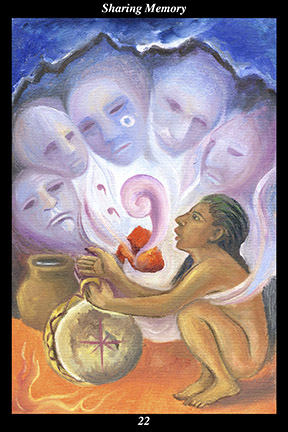

 | IMAGEA male warrior conducts a ritual inside a fire-lit cave. He chants and drums in order to invoke the spirits of the ancients to come and speak to him. A jar of water sits beside the heated stone shaped like a heart. When its water is thrown onto the stone it hisses loudly and calls to the ancients, who appear in the rising steam. |